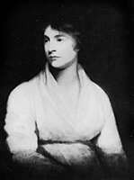

Philosophy Pages
| Dictionary | Study Guide | Logic | F A Q s | ||
|---|---|---|---|---|---|---|
| History | Timeline | Philosophers | Locke | |||
| Philosophy Pages
| Dictionary | Study Guide | Logic | F A Q s | ||
|---|---|---|---|---|---|---|
| History | Timeline | Philosophers | Locke | |||

|
Life and Works
Bibliography Internet Sources |
A self-taught native of London, Mary Wollstonecraft worked as a schoolteacher and headmistress at a school she established at Newington Green with her sister Eliza. The sisters soon became convinced that the young women they tried to teach had already been effectively enslaved by their social training in subordination to men. In Thoughts on the Education of Daughters (1787) Wollstonecraft proposed the deliberate extrapolation of Enlightenment ideals to include education for women, whose rational natures are no less capable of intellectual achievement than are those of men.
Following a period of service as a governess to Lord Kingsborough in Ireland, Wollstonecraft spent several years observing political and social developments in France, and wrote History and Moral View of the Origins and Progress of the French Revolution (1793). Her A Vindication of the Rights of Men (1790) is a spirited defense of the ideals of the Revolution against the conservative objections of Burke. Upon her return to England, she joined a radical group whose membership included Blake, Paine, Fuseli, and Wordsworth. Her first child, Fanny, was born in 1795, the daughter of American Gilbert Imlay. After his desertion, she joined the radical activist William Godwin, a long-time friend whom she married in 1797. Wollstonecraft died a few days after the birth of their daughter, Mary (who later married Percy Bysshe Shelley and wrote Frankenstein, or The Modern Prometheus and other novels).
Wollstonecraft's lasting place in the history of philosophy rests upon A Vindication of the Rights of Woman (1792).  In this classical feminist text, she appealed to egalitarian social philosophy as the basis for the creation and preservation of equal rights and opportunities for women. The foundation of morality in all human beings, male or female, is their common possession of the faculty of reason, Wollstonecraft argued, and women must claim their equality by accepting its unemotional dictates. Excessive concern for romantic love and physical desirability, she believed, are not the natural conditions of female existence but rather the socially-imposed means by which male domination enslaves them. The posthumously-published Maria, or the Wrongs of Woman develops similar themes in a fictional setting, by showing that the plight of working women differs little from imprisonment.
|
Recommended Reading:
Primary sources:
Secondary sources:
Additional on-line information about Wollstonecraft includes:
|